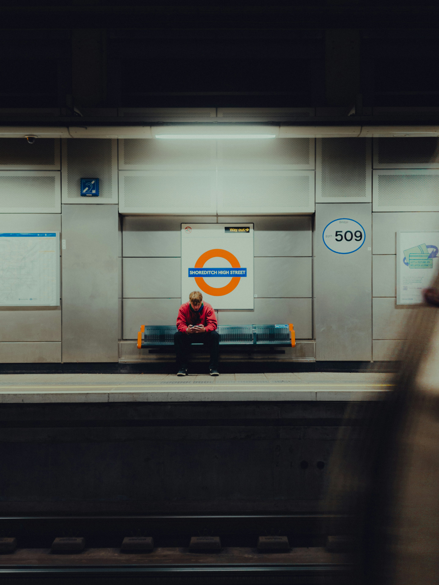

April 14, 2025
Why I Traded My Stylus for a Keyboard
There’s something electrifying about typing your first lines of code—like unlocking a new superpower you didn’t know you had.

April 13, 2025
Why Learning to Code Feels Like Magic
After that first “Hello, world,” I was hooked—every bug became a puzzle, every solution a little victory, and suddenly, the screen wasn’t just glowing—it was speaking back.

April 10, 2025
The Dream Started to Hurt
Sometimes, working in entertainment art felt like pouring your soul into a piece just to have it buried under endless revisions or left unseen. It’s tough watching passion turn into burnout in a system that rarely values the artist as much as the outcome.